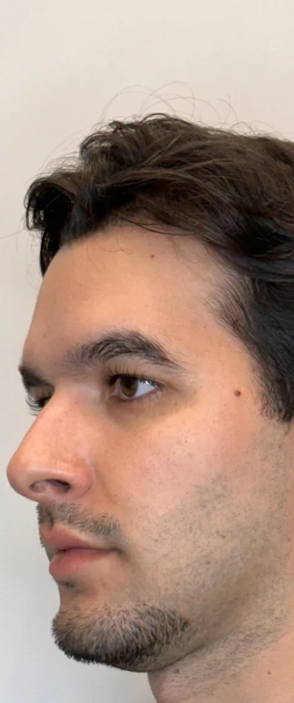
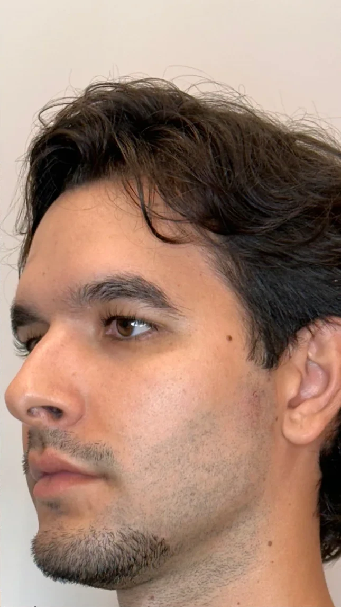
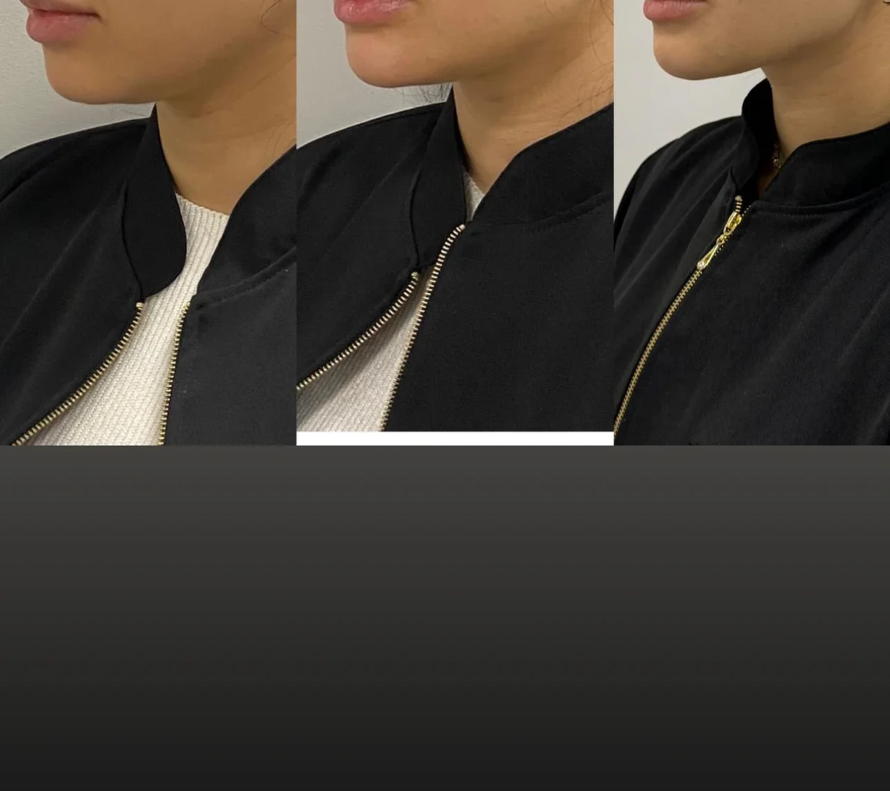
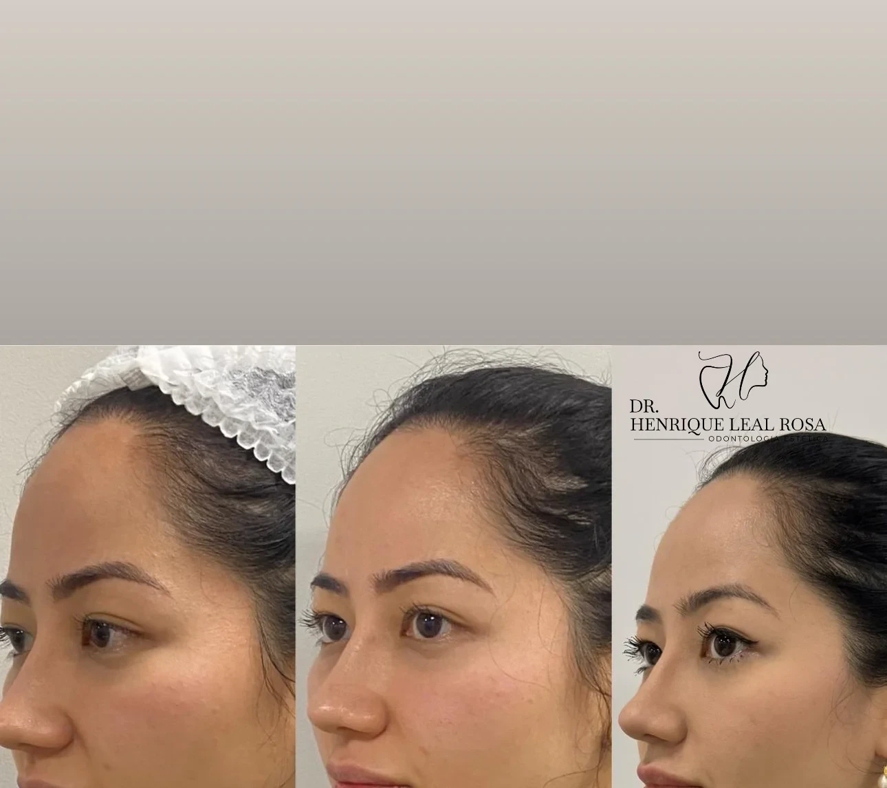

Resumo rápido
Se você está pesquisando harmonização facial em Curitiba, aqui vai o essencial, sem rodeio:
- Harmonização facial reúne procedimentos injetáveis que devolvem equilíbrio, volume e sustentação ao rosto. Não é pacote fixo: o plano é definido caso a caso.
- O que decide o resultado não é o produto, e sim a avaliação — anatomia, qualidade da pele, expressão e o que você não quer mudar.
- Os recursos mais usados são preenchimento labial, bioestimulador de colágeno, fios de PDO, toxina botulínica e rinomodelação.
- O investimento varia por produto, área tratada e número de sessões. Trabalhamos com faixas de valor, nunca com tabela fechada.
- Atendimento no Água Verde, em Curitiba, com o Dr. Henrique Leal Rosa — cirurgião-dentista (CRO-PR 31739) e biomédico esteta (CRBM-PR 8966).
Harmonização facial: o que é e o que não é
É o conjunto de procedimentos minimamente invasivos que ajusta proporções da face. Osso, gordura e pele mudam de posição com o tempo, e o rosto perde sustentação. O trabalho é reconstruir a relação entre testa, malar, mandíbula, queixo e lábios para que o conjunto volte a parecer coerente.
O que ela não é:
- ❌ Não é "uma seringa de cada lado" nem pacote fechado de clínica.
- ❌ Não é transformar você em outra pessoa. Se o resultado chama mais atenção que você, o planejamento falhou.
- ❌ Não é livre de risco. Hematoma, inchaço, nódulo e, raramente, complicações vasculares existem e precisam ser conversados antes.
- ❌ Não é definitiva — e isso é uma vantagem: dá para ajustar.
Quais procedimentos entram na harmonização facial
Cada recurso resolve um problema diferente. Ninguém precisa de todos. O segredo da naturalidade é associar apenas o que a sua anatomia solicita:
Preenchimento labial 💉
Ácido hialurônico reticulado para contorno, hidratação profunda e volume proporcional ao restante do rosto. O preenchimento labial em Curitiba está entre os pedidos mais frequentes — e é justamente onde mais se vê exagero. A escolha do produto (mais firme ou maleável) e a técnica mudam tudo.
Ver detalhes do preenchimento labial →Bioestimulador de colágeno ✨
Induz a produção de colágeno ao longo de meses. O resultado é gradual, não imediato, e a evidência científica é promissora, mas de certeza limitada. Se a dúvida é entre esse recurso e os fios, temos um comparativo completo em fios de PDO ou bioestimulador: qual escolher.
Saiba mais sobre bioestimuladores de colágeno →Fios de PDO 🪡
Fios absorvíveis de polidioxanona que tracionam a pele e estimulam colágeno. Em revisões sistemáticas, inchaço (cerca de 35% dos casos) e irregularidades na pele (10%) são as intercorrências mais relatadas. É um recurso de sustentação, não um lifting cirúrgico.
Conheça o protocolo de fios de PDO em Curitiba →Toxina botulínica 🌿
Relaxa a musculatura responsável pelas rugas dinâmicas (testa, glabela, pés de galinha). As indicações aprovadas variam por marca e constam na bula — vale conferir no Bulário Eletrônico da Anvisa ↗.
Aplicação de toxina botulínica sem congelar o rosto →Rinomodelação 📐
Preenchimento não cirúrgico do nariz, para corrigir dorso, irregularidades e ponta de forma discreta. A região tem risco vascular real e exige conhecimento anatômico profundo e mãos experientes.
Ver detalhes e indicações da rinomodelação →Como é a avaliação e o plano por etapas
A primeira consulta dura mais que o procedimento em si:
Medicamentos em uso, doenças, cirurgias, gestação, alergias.
Fotos padronizadas de frente e perfil, proporções e assimetrias. Muitas assimetrias são normais e não devem ser zeradas.
O que incomoda você, o que você não quer mudar e como pretende se sentir depois.
Priorizamos o que entrega mais com menos produto. Fazemos uma etapa, reavaliamos em 15 a 30 dias (tempo ideal para acomodação e resposta tecidual) e só então seguimos.
Quanto custa harmonização facial em Curitiba
Não existe preço único. O valor final é a soma de alguns fatores:
- Produto — marca, tecnologia e volume de cada seringa ou frasco.
- Áreas tratadas — tratar só os lábios não custa o mesmo que reestruturar terço médio e inferior.
- Complexidade — rinomodelação e contorno de mandíbula exigem mais tempo e mais cuidado vascular.
- Sessões — bioestimuladores costumam pedir mais de uma aplicação.
- Retornos — acompanhamento e retoques eventuais.
Na prática, protocolos em Curitiba variam por etapa conforme a avaliação anatômica individual e os objetivos estéticos de cada paciente. Desconfie de orçamento fechado por WhatsApp sem avaliação presencial. Detalhamos a tabela completa e faixas de valores em quanto custa harmonização facial em Curitiba.
Antes e depois: por que a naturalidade decide
Antes e depois bem feito é quase chato de olhar. Você vê a mesma pessoa, só com o rosto descansado.
O contrário — malar volumoso demais, lábio que trava o sorriso, queixo que muda o formato do rosto — aparece quando a dose é ditada pela vontade de "fazer bonito", não pela anatomia. No caso do ácido hialurônico dá para reverter, mas o caminho de volta incomoda.
Por isso trabalhamos com subcorreção: aplicamos menos, observamos e complementamos depois. Veja o raciocínio em resultados.

Antes
DepoisDefinição do ângulo da mandíbula e queixo preservando traços masculinos naturais.

Antes
DepoisReposição sutil de volume no terço médio e contorno suave sem perda de identidade.
Recuperação e cuidados em cada procedimento
Inchaço e pequenos hematomas por 2 a 7 dias. Gelo, cabeceira elevada, sem esforço físico nas primeiras 24 h. Guia completo de cuidados pós-preenchimento labial.
Inchaço leve, sensibilidade local e possibilidade de nódulo. Massagem conforme orientação e retorno em semanas.
Edema por até 10 dias e sensibilidade ao toque. Evitar movimentos amplos e dormir de barriga para baixo no início.
Sem downtime real. Evitar deitar por 4 h, academia e sauna por 24 a 48 h. Efeito entre 3 e 7 dias, com pico por volta de 15.
Edema por alguns dias; evitar óculos de grau e pressão local.
Quem é o Dr. Henrique Leal Rosa
Dr. Henrique Leal Rosa
Dr. Henrique Leal Rosa é cirurgião-dentista (CRO-PR 31739) e biomédico esteta (CRBM-PR 8966). Atende em Curitiba, no Água Verde — Edifício Today's Office, Av. República Argentina, 1237.
A dupla credencial importa por um motivo prático: a odontologia lê a face como estrutura funcional (músculos da mastigação, mandíbula, oclusão, articulação); a biomedicina estética cuida da pele, da gordura e dos materiais injetáveis. Quem avalia as duas camadas ao mesmo tempo enxerga o plano inteiro e não empurra o que não resolve o seu problema.
Ele também é professor de pós-graduação e mentor clínico. Mais detalhes na página sobre.
Vale acompanhar o cenário normativo: a Resolução CFO nº 198/2019, que reconheceu a Harmonização Orofacial como especialidade odontológica, está sob revisão judicial, e o CFO mantém nota de posicionamento sobre o tema.